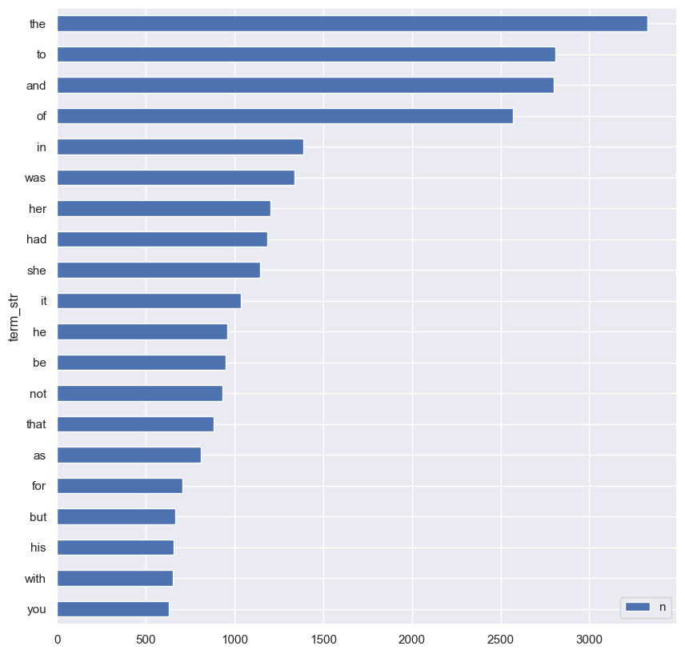
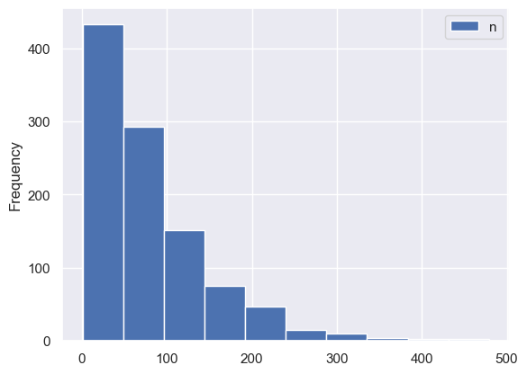

import pandas as pd
from sklearn.feature_extraction.text import CountVectorizer
import seaborn as snsTokenizing with SciKit Learn
Course: DS 5001
Module: 02 Text Models
Topic: Tokenizing with SciKit Learn
Author: R.C. Alvarado
Date: 14 October 2022 (revised; orig. 18 October 2022)Purpose:
Demonstrate use of SciKit to perform fast tokenization.
Note that this method does not preserver tokens per se; it extracts types and counts instances of each type (i.e. number of tokens per type).
Set Up
sns.set()Import Config
import configparser
config = configparser.ConfigParser()config.read("../env.ini")
data_home = config['DEFAULT']['data_home']
model_dir = config['DEFAULT']['model_dir']data_home, model_dir('/Users/rca2t1/Dropbox/Courses/DS/DS5001/DS5001_2024_01_R/data',
'/Users/rca2t1/Dropbox/Courses/DS/DS5001/DS5001_2024_01_R/models')text_file = f"{data_home}/gutenberg/pg105.txt"Import text
Import source file
docs = pd.DataFrame(dict(doc_str=open(text_file, 'r').read().split('\n\n')))Define lines where text begins and ends
a = docs[docs.doc_str.str.contains("1818")].index.values[0]
b = docs[docs.doc_str.str.contains("Finis")].index.values[0]Select only relevant text
docs = docs[(docs.index > a) & (docs.index < b)]Clean up strings
docs.doc_str = docs.doc_str.str.replace(r"\n+", " ", regex=True)Remove blank lines
docs = docs[docs.doc_str != '']Create index
docs = docs.reset_index(drop=True)
docs.index.name = 'doc_id' Inspect results.
Note that the “docs” are paragraphs.
docs| doc_str | |
|---|---|
| doc_id | |
| 0 | Chapter 1 |
| 1 | Sir Walter Elliot, of Kellynch Hall, in Somer... |
| 2 | "ELLIOT OF KELLYNCH HALL. |
| 3 | "Walter Elliot, born March 1, 1760, married, J... |
| 4 | Precisely such had the paragraph originally st... |
| ... | ... |
| 1025 | Mrs Clay's affections had overpowered her inte... |
| 1026 | It cannot be doubted that Sir Walter and Eliza... |
| 1027 | Anne, satisfied at a very early period of Lady... |
| 1028 | Her recent good offices by Anne had been enoug... |
| 1029 | Mrs Smith's enjoyments were not spoiled by thi... |
1030 rows × 1 columns
Vectorize Corpus
We use SciKit Learn’s CountVectorizer() method, which as the following signature:
CountVectorizer(
input='content',
encoding='utf-8',
decode_error='strict',
strip_accents=None,
lowercase=True,
preprocessor=None,
tokenizer=None,
stop_words=None,
token_pattern='(?u)\\b\\w\\w+\\b',
ngram_range=(1, 1),
analyzer='word',
max_df=1.0,
min_df=1,
max_features=None,
vocabulary=None,
binary=False,
dtype=<class 'numpy.int64'>,
)This the doctring from the function:
Convert a collection of text documents to a matrix of token counts
This implementation produces a sparse representation of the counts using scipy.sparse.csr_matrix.
If you do not provide an a-priori dictionary and you do not use an analyzer that does some kind of feature selection then the number of features will be equal to the vocabulary size found by analyzing the data.
Read more in theUser Guide <text_feature_extraction>.
engine = CountVectorizer()
model = engine.fit_transform(docs.doc_str)Extract Count Matrix
The engine provides a list of terms …
V = engine.get_feature_names_out()X = pd.DataFrame(model.toarray(), columns=V)
X.index.name = 'doc_id'X.shape(1030, 5751)X| 10 | 11 | 12 | 13 | 14 | 15 | 16 | 17 | 1760 | 1784 | ... | younker | your | yours | yourself | yourselves | youth | youthful | zeal | zealous | zealously | |
|---|---|---|---|---|---|---|---|---|---|---|---|---|---|---|---|---|---|---|---|---|---|
| doc_id | |||||||||||||||||||||
| 0 | 0 | 0 | 0 | 0 | 0 | 0 | 0 | 0 | 0 | 0 | ... | 0 | 0 | 0 | 0 | 0 | 0 | 0 | 0 | 0 | 0 |
| 1 | 0 | 0 | 0 | 0 | 0 | 0 | 0 | 0 | 0 | 0 | ... | 0 | 0 | 0 | 0 | 0 | 0 | 0 | 0 | 0 | 0 |
| 2 | 0 | 0 | 0 | 0 | 0 | 0 | 0 | 0 | 0 | 0 | ... | 0 | 0 | 0 | 0 | 0 | 0 | 0 | 0 | 0 | 0 |
| 3 | 0 | 0 | 0 | 0 | 0 | 1 | 0 | 0 | 1 | 1 | ... | 0 | 0 | 0 | 0 | 0 | 0 | 0 | 0 | 0 | 0 |
| 4 | 0 | 0 | 0 | 0 | 0 | 0 | 1 | 0 | 0 | 0 | ... | 0 | 0 | 0 | 0 | 0 | 0 | 0 | 0 | 0 | 0 |
| ... | ... | ... | ... | ... | ... | ... | ... | ... | ... | ... | ... | ... | ... | ... | ... | ... | ... | ... | ... | ... | ... |
| 1025 | 0 | 0 | 0 | 0 | 0 | 0 | 0 | 0 | 0 | 0 | ... | 0 | 0 | 0 | 0 | 0 | 0 | 0 | 0 | 0 | 0 |
| 1026 | 0 | 0 | 0 | 0 | 0 | 0 | 0 | 0 | 0 | 0 | ... | 0 | 0 | 0 | 0 | 0 | 0 | 0 | 0 | 0 | 0 |
| 1027 | 0 | 0 | 0 | 0 | 0 | 0 | 0 | 0 | 0 | 0 | ... | 0 | 0 | 0 | 0 | 0 | 0 | 0 | 0 | 0 | 0 |
| 1028 | 0 | 0 | 0 | 0 | 0 | 0 | 0 | 0 | 0 | 0 | ... | 0 | 0 | 0 | 0 | 0 | 0 | 0 | 0 | 0 | 0 |
| 1029 | 0 | 0 | 0 | 0 | 0 | 0 | 0 | 0 | 0 | 0 | ... | 0 | 0 | 0 | 0 | 0 | 0 | 0 | 0 | 0 | 0 |
1030 rows × 5751 columns
Extract Vocabulary
But, it’s better to get the list and the counts to create a vocabulary table.
V = X.sum().to_frame('n')
V.index.name = 'term_str'V| n | |
|---|---|
| term_str | |
| 10 | 1 |
| 11 | 1 |
| 12 | 1 |
| 13 | 1 |
| 14 | 1 |
| ... | ... |
| youth | 15 |
| youthful | 1 |
| zeal | 5 |
| zealous | 2 |
| zealously | 1 |
5751 rows × 1 columns
Show Stats
V.sort_values('n').tail(20).plot.barh(figsize=(10,10));
Look at Documents
D = X.sum(1).to_frame('n')D| n | |
|---|---|
| doc_id | |
| 0 | 1 |
| 1 | 111 |
| 2 | 4 |
| 3 | 50 |
| 4 | 71 |
| ... | ... |
| 1025 | 76 |
| 1026 | 64 |
| 1027 | 221 |
| 1028 | 96 |
| 1029 | 167 |
1030 rows × 1 columns
D.describe()| n | |
|---|---|
| count | 1030.000000 |
| mean | 78.564078 |
| std | 68.798485 |
| min | 1.000000 |
| 25% | 28.000000 |
| 50% | 60.000000 |
| 75% | 109.750000 |
| max | 479.000000 |
D.plot.hist();